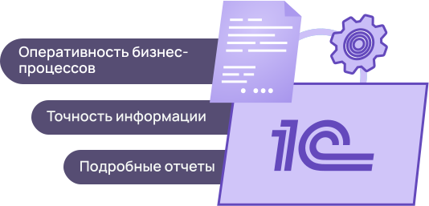

Модуль интеграции
1С

@@include('components/bem-blocks/_button.html',{
"color": "purple",
"text": "Подключить"
})
Во вселенной 1С существует большое количество модулей. Это специальные мини-программы, расширяющие конфигурацию и добавляющие новые возможности тому продукту 1С, которым вы пользуетесь. В числе таких модулей числится сервис кадрового ЭДО.
Кадровый ЭДО — электронный документооборот, позволяющий сотрудникам компании мгновенно обмениваться документами между собой и с контрагентами. То есть, вы можете подписывать, отправлять, принимать, редактировать, формировать и просматривать документацию в режиме онлайн и не выходя из программы 1С.
Модуль кадрового ЭДО подойдет для организаций, работающих со следующими конфигурациями:
«1С: Зарплата и управление персоналом»
в редакции 3.1 (3.1.14.129) и выше;«1С: Зарплата и управление персоналом»
в редакции 2.5 (2.5.167.1) и выше;«1С Управление производственным предприятием»
в редакции 1.3 (1.3.167.1) и выше;«1С: Бухгалтерия предприятия»
в редакции 3.0 (3.0.106.40) и выше;«1C: ERP Управление предприятием»
в редакции 2 (2.5.8.191) и выше;«1С: Комплексная автоматизация»
в редакции 2.5 (2.5.8.191) и выше.Чтобы установить модуль КЭДО в вашу архитектуру 1С обратитесь к техническому специалисту.
Достоинства модуля
Модуль КЭДО обладает рядом преимуществ, которые значительно упрощают и ускоряют рутинные бизнес процессы.
Расширение запускается одновременно с программой 1С и не требует дополнительных настроек.
Возможно приглашение в систему кадрового ЭДО сразу нескольких сотрудников единовременно.
С помощью модуля 1С: КЭДО можно создавать заявки на выпуск неквалифицированной электронной подписи.
Отправлять другим пользователям кадрового ЭДО можно как документы, созданные в 1С, так и документы, созданные в других системах.
Перейди в 1С: КЭДО можно как с главной страницы 1С, так и из отдельной вкладки (журнала «Кадры»). Кнопки максимально доступны для пользователей.
Информацию по сотрудникам и документам, которые он подписывал посредством ЭДО можно изучить, не выходя из 1С.
Дополнительным преимуществом работы с модулем станет и то, что каждому сотруднику, приглашенному в 1С: КЭДО можно присвоить одну из ролей: наблюдатель, подписант, согласующий, ознакамливающийся.
Стоимость модуля КЭДО составляет:
Что она включает в себя:
- Лицензия сроком на 12 месяцев с технической поддержкой и подробной инструкцией для пользователей;
- Регулярные обновления с целью улучшения производительности и с учетом меняющегося законодательства;
- Внедрение модуля в вашу конфигурацию 1С, настройка, тестирование, устранение ошибок, если они возникнут;
- Первичное обучение сотрудников, которым предстоит работать с модулем КЭДО (если потребуется больше уроков, то за них будет взыматься доп. оплата);
- Проверка наличия обязательной информации в шаблонах документов с учетом действующего законодательства.
Что не входит в оплату:
- Доработки модуля под индивидуальные потребности клиента. Данная услуга оплачивается отдельно после оценки необходимости внесения изменений;
- Индивидуальное сопровождение клиента. Услугу также можно заказать отдельно. Она будет включать в себя диагностику, консультации по работе с модулем, устранение ошибок;
- Обучение сотрудников клиента. Кроме первичного, дополнительные уроки проводятся за отдельную стоимость.